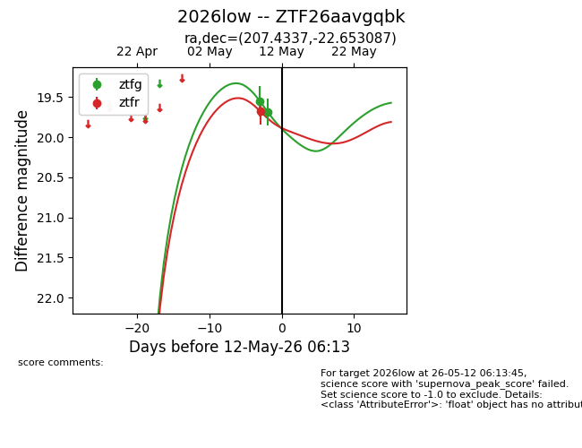
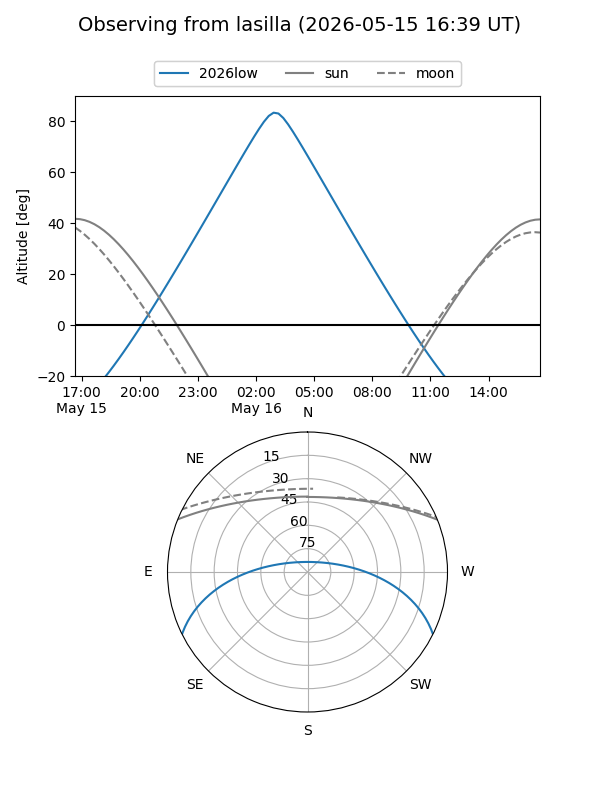
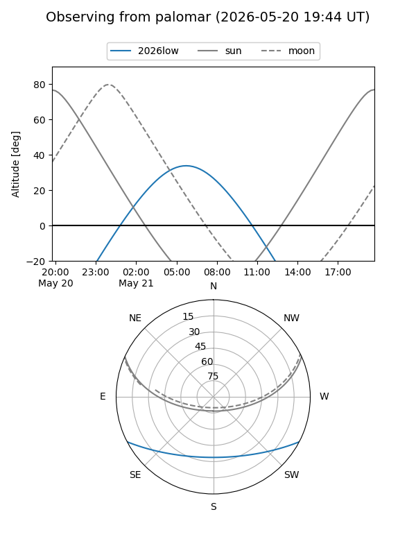
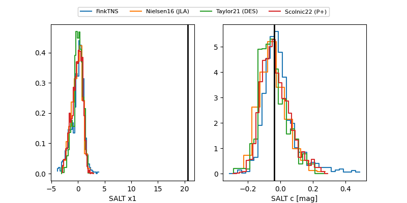

2026low
Target 2026low at 2026-05-12 06:15
Aliases and brokers:
FINK: link
Lasair: link
ALeRCE: link
TNS: link
YSE: link
alt names
ZTF26aavgqbk (ztf,fink_ztf)
2026low (tns,yse)
Coordinates:
equatorial (ra, dec) = 207.4337,-22.65309
equatorial (HMS+DMS) = 13:49:44.08,-22:39:11.11
galactic (l, b) = (320.1349,+38.26344)
Flags:
Photometry:
last ztfg=19.68, ztfr=19.68
2 ztfg, 1 ztfr detections
Lightcurve

Visibility


Additional plots
